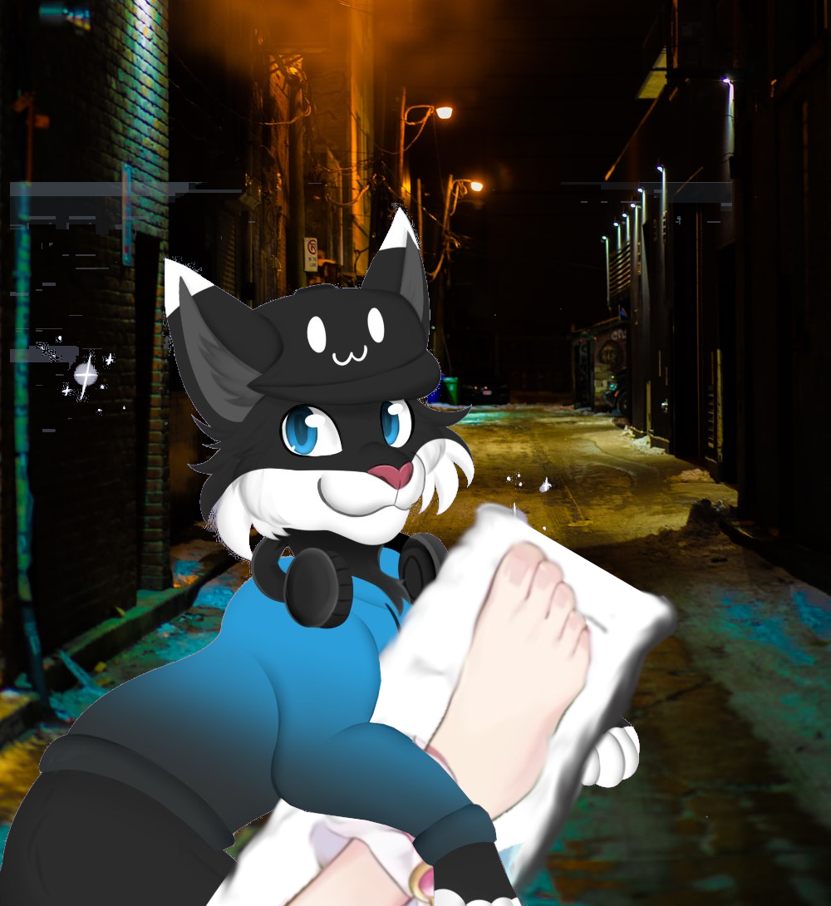

♥ NobleWishVT ♥

Here is my twitch!
Here is my twitter!
Here is my youtube!
About me!
Hi, i'm Noble and im a hat that controls a cat and I like to play games on twitch!
What I Hope to acomplish with my twitch careeer!
- Become bigger then ChibiDoki's head!
- Learn how to stop cheeating
- Leearn to be a big enough person to admit it is skill isues and not an FPS issue